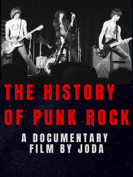
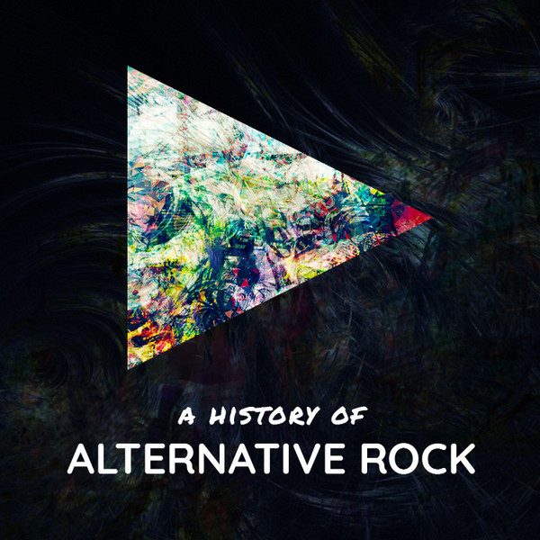

Classic Rock
Classic rock encompasses any rock music produced between the 1960s and 1980s. These songs feature lots of guitar, and many notable classic rock artists are legendary guitar players. Some notable bands are Led Zeppelin, Guns N’ Roses, Pink Floyd, and Dire Straits

Though the exact origin is not necessarily defined, many believe that rock originated in the 1950s with artists such as Elvis Presley and Jerry Lee Lewis. The genre became more popular in the 1970s, with artists such as the Kinks, the Who, and Black Sabbath. This music was more bluesy and jazzy. With the 1980s came hard rock, featuring bands like Metallica, Guns N’ Roses, and AC/DC. By the late 1980s and early 1990s, the classic rock era ended.

The album “A Night at the Opera” was released in 1975 by Queen. This album featured many hits - notably the song Bohemian Rhapsody. This album is known by many rock fans to be a masterpiece and one of the greatest albums of all time. This was Queen’s first platinum selling album and is one of the reasons that this band is so widely known as one of the most successful classic rock bands.
Punk Rock

Punk rock is known to be an aggressive form of rock music. This subcategory of rock began in the late 1970s. Punk rock is often associated with teen rebellion and alienation. The music sounds fast paced and loud, and features sarcastic and angry lyrics. The general theme of punk rock was to go against the mainstream music that was currently released.

This type of rock was generally found in the US and in the UK in the 1970s. At the time, the British economy was in a very bad state, so this gave rise to artists that wanted to rebel, and the punk rock genre was very fitting for such artists. Bands such as the Sex Pistols, the Clash, and the Slits are the more notable punk rock artists of this time.

“Anarchy in the UK” is a song released by the Sex Pistols in 1976. This songs lyrics were very on brand for a punk song at this age, as the lyrics endorsed violence against the British government. This song is currently ranked number 56 on Rolling Stone magazine’s list of the 500 greatest songs of all time.
Alternative Rock

Alternative rock, sometimes called alt-rock, became popular in the 1990s, and covers a very wide range of rock. Many of these artists were influenced by music of the past few decades, but they wanted to create something new. The melodies in these songs sound more poppy than those of previous rock songs. Notable bands are The Cure, The Strokes, and Modest Mouse.

Alt Rock became popular in the 1990s, and it was seen as a continuation of college rock and the start of a new age of rock. The artists in this genre were very specific to cities. For example, The Smashing Pumpkins were in Chicago, the Red Hot Chili Peppers were in Los Angeles, and The Pixies were in Boston. Seattle also became a hub of alternative rock, as that’s where Nirvana originated.

Bleach is the first album produced by one of the most famous alt-rock bands - Nirvana. This album was certified platinum and sold more than 1.9 million copies. This album featured music that was a combination of different types of rock: grunge, punk, and alternative. From this albums release, Nirvana became one of the most popular of its time.
Share your favorite genre!
Genres of Music
Thank you for your submission!